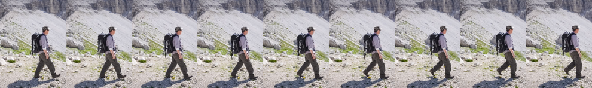
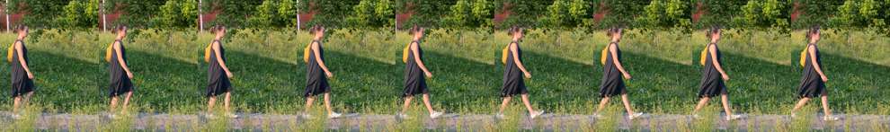
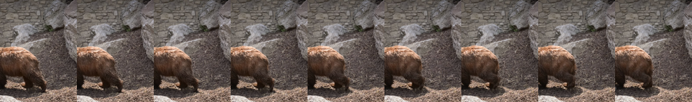
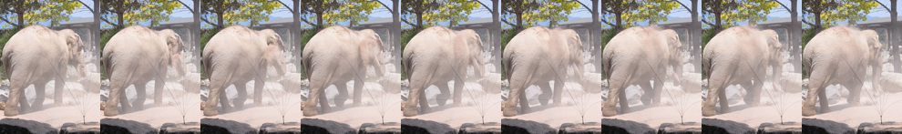
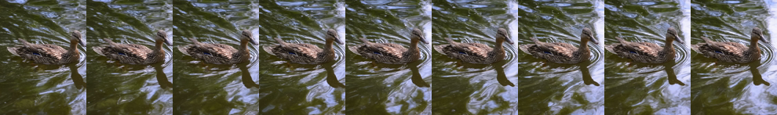
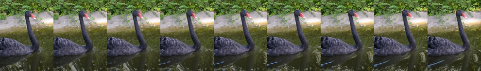
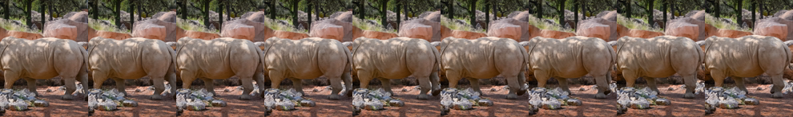

Corpus-learned transitions applied to off-distribution real footage. Each specialist output is paired with its base twin on byte-identical input (same endpoint, same prompt, same seed, no adapter), so the difference you see is the adapter alone.
How to read these. The strip above each pair is the actual conditioning window the model was given (first 9 frames; two-sided rows also show the suffix window). The prompt contains no outcome text — just the scene description and the neutral token sksz. Scoring keeps this lane typed as %_proxy: a DAVIS scene cannot look like a corpus class, so the claim is the margin vs base, never the absolute level.
1. color_rain transition applied to DAVIS hikeone-sidedseed 42
A hiker in a light purple shirt and olive trousers carrying a large black backpack walks across a bright rocky mountain slope. sksz.

specialist — color_rain
no base twin generated yet
2. color_rain transition applied to DAVIS hikeone-sidedseed 43
A hiker in a light purple shirt and olive trousers carrying a large black backpack walks across a bright rocky mountain slope. sksz.
specialist — color_rainbase — same input, no adapter
3. gas_transformation transition applied to DAVIS luciaone-sidedseed 42
A woman in a dark sleeveless dress with a bright orange backpack walks along a paved path beside tall sunlit grass and green shrubs. sksz.

specialist — gas_transformationbase — same input, no adapter
4. gas_transformation transition applied to DAVIS luciaone-sidedseed 43
A woman in a dark sleeveless dress with a bright orange backpack walks along a paved path beside tall sunlit grass and green shrubs. sksz.
specialist — gas_transformationbase — same input, no adapter
5. hero_flight transition applied to DAVIS bear_elephanttwo-sidedseed 42
A brown bear walks across gravel and dirt in front of a grey stone wall. sksz. a pale grey elephant walks across sandy ground beside white rocks and a shaded enclosure wall.


specialist — hero_flightbase — same input, no adapter
6. hero_flight transition applied to DAVIS bear_elephanttwo-sidedseed 43
A brown bear walks across gravel and dirt in front of a grey stone wall. sksz. a pale grey elephant walks across sandy ground beside white rocks and a shaded enclosure wall.
specialist — hero_flightbase — same input, no adapter
7. illustration_scene transition applied to DAVIS mallard_waterone-sidedseed 42
A mallard duck with brown speckled plumage swims across rippling green water in bright daylight. sksz.

specialist — illustration_scenebase — same input, no adapter
8. illustration_scene transition applied to DAVIS mallard_waterone-sidedseed 43
A mallard duck with brown speckled plumage swims across rippling green water in bright daylight. sksz.
specialist — illustration_scenebase — same input, no adapter
9. shadow_smoke transition applied to DAVIS blackswan_rhinotwo-sidedseed 42
A black swan with a red and white beak glides across dark green water in front of dense leafy foliage. sksz. a rhinoceros stands on red earth beside a rocky wall, framed between tall tree trunks.


specialist — shadow_smokebase — same input, no adapter
10. shadow_smoke transition applied to DAVIS blackswan_rhinotwo-sidedseed 43
A black swan with a red and white beak glides across dark green water in front of dense leafy foliage. sksz. a rhinoceros stands on red earth beside a rocky wall, framed between tall tree trunks.
specialist — shadow_smokebase — same input, no adapter
Generated by ladder2 · registry.jsonl is the single source of truth · serve from the repo root for the videos to resolve.